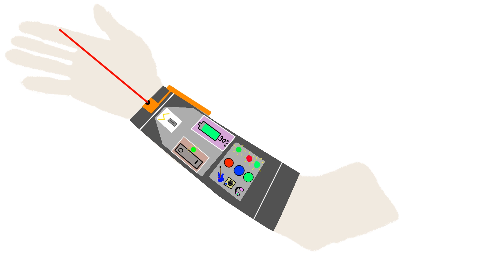

Hoe zouden gitaristen in de toekomst muziek maken?
Dat is een goede vraag waar we nog geen echt idee bij hebben. Wel kunnen we gaan speculeren.
Ik kwam met het idee om een gitaar armband te maken waarmee je het geluid kan aanpassen, zonder kabels
te pluggen kan spelen, en om de optie luchtgitaar te toevoegen om overal te kunnen gitaar spelen.
te pluggen kan spelen, en om de optie luchtgitaar te toevoegen om overal te kunnen gitaar spelen.
 Voorkant
Voorkant

Achterkant